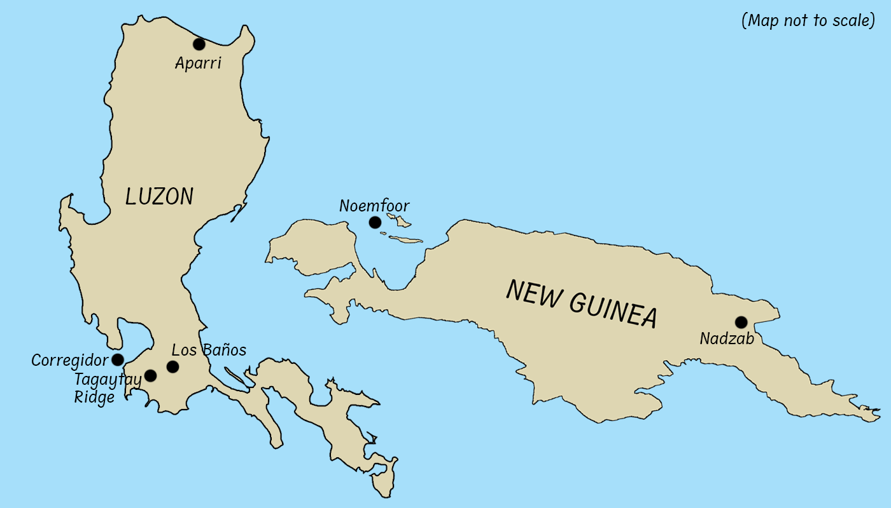
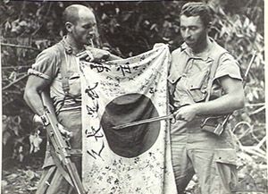
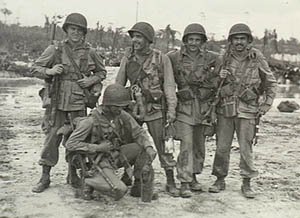
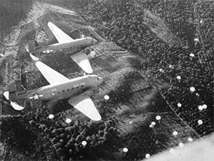
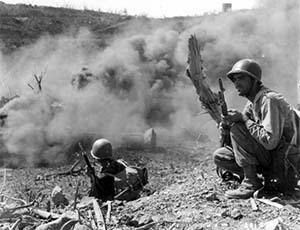
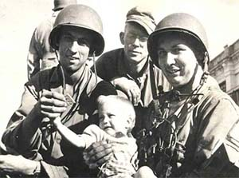
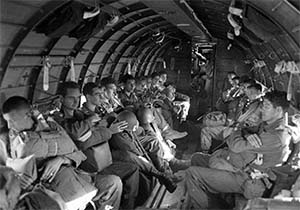

Click the interactive map below to learn more about the combat jumps made by US Army paratroopers in the Pacific during World War II:

Combat Jump #1
5 September 1943: The 503rd RCT makes the first combat jump of the Pacific War at Nadzab, Papua New Guinea. The operation goes smoothly and helps bolster the US Army's confidence in using Airborne forces.

Combat Jump #2
3 July 1944: Due to faulty intelligence, the 503rd is ordered to jump onto Noemfoor Island in Dutch New Guinea (today in Indonesia). They sustain several injuries, none of which are caused by the enemy, but they capture the island in short order.

Combat Jump #3
3 February 1945: The 11th Airborne makes their first combat jump at Tagaytay Ridge. Despite most troopers jumping at the wrong time, they quickly reassemble and head north to Manila, the capital of the Philippines.

Combat Jump #4
16 February 1945: The 503rd RCT makes their most famous jump of the war when they jump onto Corregidor Island. After a bloody 2-week battle, the strategic and symbolic island is back in American hands.

Combat Jump #5
23 February 1945: The 11th Airborne makes its most famous combat jump near the town of Los Baños in order to liberate over 2,000 Allied civilian prisoners. Every single prisoner is rescued alive, making it the most successful rescue operation in US military history.

Combat Jump #6
23 June 1945: In the last combat jump of World War II, the 11th Airborne lands near the town of Aparri to cut off and destroy the remaining enemy forces in the area.
